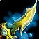

Shard of Azzinoth
Shard of AzzinothShard of Azzinoth161 to 242 damage, speed 1.9, 64 attack powerDrops from Illidan Stormrage, Black Temple
161 to 242 damage, speed 1.9, 64 attack power
Drops from Illidan Stormrage, Black Temple
Combat Rogue
not yet decided
Constraints
Hit cap9%special
attacks
Precision-5%
Improved Faerie Fire-3%assumed
Gear needs1%
Entry13.1%clear
by 12%
Tier hands14.1%clear
by 13.1%
Tier hands and head14.7%clear
by 13.7%
Dual-wields: white swings miss until 28%, which nothing in this patch
reaches, so hit past the cap still buys accuracy.
White swings stop critting at 50.5%, measured at the special-attack hit
cap.
Nothing rostered reaches it this phase, so crit stays linear all tier.
No haste threshold to protect.
Delta
Shard of AzzinothShard of Azzinoth161 to 242 damage, speed 1.9, 64 attack
powerDrops from Illidan Stormrage,
Black Temple in Combat
Rogue terms
| Stat | Over best weapon, Hyjal Summit Blade of InfamyBlade of Infamy182 to 339 damage, speed 2.6, 28 agility, 56 attack powerDrops from Anetheron, Mount Hyjal | Over second best, Serpentshrine Cavern Talon of AzsharaTalon of Azshara182 to 339 damage, speed 2.7, 168 armor, 15 agility, 40 attack power, 20 hit rating (1.27%)Drops from Morogrim Tidewalker, Serpentshrine Cavern | Over third best, Hyjal Summit Boundless AgonyBoundless Agony144 to 217 damage, speed 1.8, 24 crit rating (1.09%), 210 armor penetrationDrops from Azgalor, Mount Hyjal | Over fourth best, Serpentshrine
Cavern
 Fang of VashjFang of Vashj144 to 217 damage, speed 1.8, 19 stamina, 56 attack power, 21 expertise ratingDrops from Lady Vashj, Serpentshrine Cavern |
Over Season 3 arena, Season 3 Vengeful Gladiator's PummelerVengeful Gladiator's Pummeler30 stamina, 34 attack power, 8 hit rating, 21 crit rating, 49 armor penetration, 12 resilienceSeason 3, an arena reward bought with rating | Over Season 2 arena, Season 2 Merciless Gladiator's SlicerMerciless Gladiator's Slicer203 to 305 damage, speed 2.6, 27 stamina, 30 attack power, 10 hit rating (0.63%), 19 crit rating (0.86%), 12 resilience | Over carried into the tier, Serpentshrine Cavern Talon of AzsharaTalon of Azshara182 to 339 damage, speed 2.7, 168 armor, 15 agility, 40 attack power, 20 hit rating (1.27%)Drops from Morogrim Tidewalker, Serpentshrine Cavern | |||||||
|---|---|---|---|---|---|---|---|---|---|---|---|---|---|---|
| Change | Converted | Change | Converted | Change | Converted | Change | Converted | Change | Converted | Change | Converted | Change | Converted | |
| armor | 0 | -168 | 0 | 0 | 0 | 0 | -168 | |||||||
| agility | -28 | -28 attack power · -0.70% melee crit | -15 | -15 attack power · -0.38% melee crit | 0 | 0 | 0 | 0 | -15 | -15 attack power · -0.38% melee crit | ||||
| stamina | 0 | 0 | 0 | -19 | -30 | -27 | 0 | |||||||
| attack power | +8 | +24 | +64 | +8 | +30 | +34 | +24 | |||||||
| hit | 0 | -20 | -1.27% | 0 | 0 | -8 | -0.51% | -10 | -0.63% | -20 | -1.27% | |||
| crit | 0 | 0 | -24 | -1.09% | 0 | -21 | -0.95% | -19 | -0.86% | 0 | ||||
| expertise rating | 0 | 0 | 0 | -21 | -21 expertise rating | 0 | 0 | 0 | ||||||
| armor penetration | 0 | 0 | -210 | -210 armor penetration | 0 | -49 | -49 armor penetration | 0 | 0 | |||||
| resilience | 0 | 0 | 0 | 0 | -12 | -12 resilience | -12 | -12 resilience | 0 | |||||
| Sum of Converted Stats | -20 attack power -0.70% melee crit | +9 attack power -0.38% melee crit -1.27% melee and ranged hit | +64 attack power -1.09% melee crit | +8 attack power | +30 attack power -0.51% melee and ranged hit -0.95% melee crit | +34 attack power -0.63% melee and ranged hit -0.86% melee crit | +9 attack power -0.38% melee crit -1.27% melee and ranged hit | |||||||